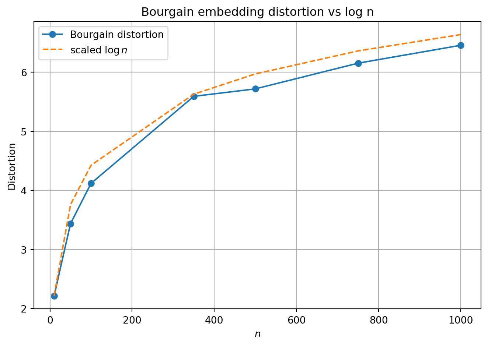
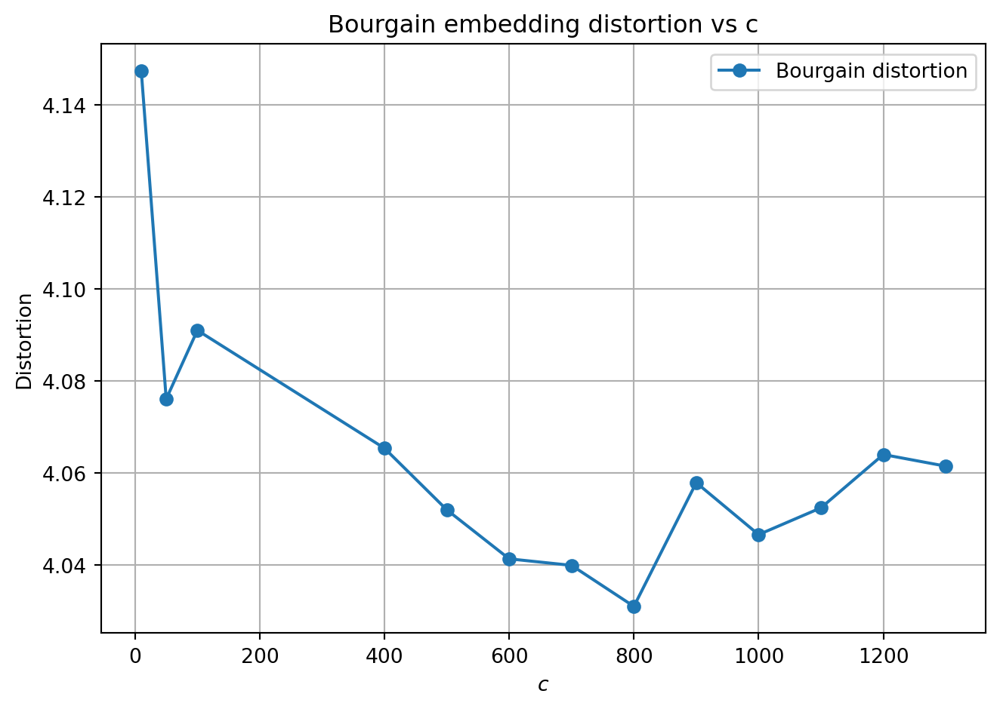

import numpy as np
def bourgain_embedding(dist_mat, c=10):
n = len(dist_mat)
if n <= 1:
return np.zeros((n, 1))
log_n = int(np.ceil(np.log2(n)))
k = c * log_n * log_n
max_dist = dist_mat.max()
f_x = np.zeros((n, k))
j = 0
for i in range(1, log_n + 1):
p = 2 ** (-i)
for _ in range(c * log_n):
subset_mask = np.random.rand(n) < p
if not np.any(subset_mask):
f_x[:, j] = max_dist
else:
f_x[:, j] = dist_mat[:, subset_mask].min(axis=1)
j += 1
return f_xIntroduction
Metric embeddings and dimension reduction are important tools in computer science and mathematics for solving the curse of dimensionality. In this post, I want to examine the Bourgain embedding, which shows that any finite metric space can be embedded into an Euclidean metric space space with \(O(\log n)\) distortion. While Bourgain embeddings are very impractical (the constant factors in the big - O are huge and the “reduced” dimensions is still high), it is an important result that shows us that no matter how “horrible” the initial metric space is, we can be achieve a distortion factor of \(O(\log n)\).
Note: I’ve written this post assuming that the reader has at least taken an undergraduate discrete math course. However, I will still define the important objects we will be using today.
Metric Spaces
A metric space \((X, d)\) is a set \(X\) with a distance function \(d: X \times X \to \mathbb{R}\). The distance function satisfies the following properties:
- \(d(x, y) \geq 0\) for all \(x, y \in X\)
- \(d(x, y) = 0\) if and only if \(x = y\)
- \(d(x, y) = d(y, x)\) for all \(x, y \in X\)
- \(d(x, y) \leq d(x, z) + d(z, y)\) for all \(x, y, z \in X\)
Some examples of metric spaces:
- A weighted graph \(G = (V, E)\) with \(X = V\) and \(d(x, y) =\) length of the shortest path between \(x\) and \(y\).
- The DNA space with \(X = \{A, C, G, T\}^n\) and \(d(x, y) =\) number of positions where \(x\) and \(y\) differ.
- The Euclidean space \(\mathbb{R}^n\) with \(X = \mathbb{R}^n\) and \(d(x, y) = \|x - y\|_2 = \sqrt{(x_1 - y_1)^2 + \cdots + (x_n - y_n)^2}\).
Maps, Embeddings and Distortions
A map \(f: X \to Y\) between two metric spaces \((X, d_X)\) and \((Y, d_Y)\) is called an embedding that maps elements of \(X\) to elements of \(Y\).
The embedding is said to be distance-preserving (isometric) if \(d_Y(f(x), f(y)) = d_X(x, y)\) for all \(x, y \in X\). However, very rarely do we have distance-preserving embeddings between metric spaces. Instead, we often consider embeddings that are “almost” distance-preserving.
An embedding with distortion of \(\alpha\) of a metric space \((X, d_X)\) into another metric space \((Y, d_Y)\) is a map \(f: X \to Y\) such that there exists constant \(r > 0\) for which \[r \cdot d_X(x, y) \leq d_Y(f(x), f(y)) \leq \alpha r \cdot d_X(x, y) \text{ for all } x, y \in X\] The distortion of an embedding is the smallest \(\alpha\) for which such a map exists.
Because we are working in a finite set for now, we can equivalently define the distortion in terms of the contraction and expansion. Given a map \(f: X \to Y\), let:
\[\text{Contraction}(f) = \max_{x, y \in X} \frac{d_Y(f(x), f(y))}{d_X(x, y)}\]
\[ \text{Expansion}(f) = \max_{x, y \in X} \frac{d_X(x, y)}{d_Y(f(x), f(y))}\]
Define the distortion of \(f\) as \(\alpha = \text{Expansion}(f)\cdot\text{Contraction}(f)\).
Bourgain Embedding
Given an arbitrary finite metric space \((X, d)\) with \(n\) points, Bourgain’s theorem says that there exists a map \(f: X \to \mathbb{R}^k\) such that the distortion of \(f\) is \(\alpha \in O(\log n)\), and \(k \in O(\log^2 n)\). The proof of this theorem is beyond the scope of this post, but it is a constructive proof so there is a natural algorithm that arises from the proof which we can implement.
The Bourgain embedding algorithm is as follows (Ye 2023):
Let \(c\) be a sufficiently large constant, and let \(\log(n)\) denote the base-2 logarithm of \(n\).
For each point \(x \in X\), define its embedding vector \(f(x)\) in the following steps:
- For \(i \in \{1, 2, \dots, \lceil \log_2(n) \rceil \}\):
- For \(j \in \{1, 2, \dots, c \cdot \lceil \log_2(n) \rceil \}\):
- Choose a random subset \(S_{ij} \subseteq X\), where each \(y \in X\) is included in \(S_{ij}\) with probability \(2^{-i}\).
- Compute \(d(x, S_{ij})\), the minimum distance from \(x\) to any point in \(S_{ij}\).
- Construct the embedding vector: \(f(x) = \langle d(x, S_{11}), d(x, S_{12}), \dots, d(x, S_{\lceil \log_2(n) \rceil \cdot c \cdot \lceil \log_2(n) \rceil})\rangle.\)
- For \(j \in \{1, 2, \dots, c \cdot \lceil \log_2(n) \rceil \}\):
- For \(i \in \{1, 2, \dots, \lceil \log_2(n) \rceil \}\):
An intuition for the algorithm is that it creates a “fingerprint” for each point by measuring its distance to random subsets of the space at multiple scales. So, for each point, we answer the question:
- “How far am I from a randomly chosen half of all points?”
- “How far am I from a randomly chosen quarter of all points?”
- “How far am I from a randomly chosen eighth of all points?”
- …
Why does this capture distance information? Imagine two points \(x\) and \(y\) in our original metric space. If they are close, they’ll have similar distances to most random subsets. When we sample a random subset \(S\), chances are the nearest point in \(S\) to \(x\) will also be close to \(y\) so, the embedded distances will also be similar.
However, if \(x\) and \(y\) are far apart, then at some scale, we’ll sample points that “separate” them. That is, there will be random subsets where \(x\) is close to some sampled point but \(y\) is far from all sampled points (or vice versa). This creates a difference in their fingerprints that the algorithm can capture when construction the embedding.
Note that in practice, this algorithm can be really bad because of the big-O constants. For example, if \(X = \mathbb{R}^{1000}\), and we chose \(c = 100\) (for less distortion), then the reduced dimension \(k = 100 \cdot \log^2{1000} = 900\). This is an improvement over the \(1000\) dimensional space, but just barely.
Implementation
Let’s implement this in python using numpy so we can vectorize parts of the code.
We can plot the distortion of this algorithm on a randomly generated metric space, as a function of \(n\) to see the logarithmic curve.
Code
import matplotlib.pyplot as plt
def distortion(dist_mat, emb):
n = dist_mat.shape[0]
max_expand = 0.0
max_contract = 0.0
for i in range(n):
for j in range(i + 1, n):
d0 = dist_mat[i, j]
d1 = np.linalg.norm(emb[i] - emb[j], ord=1)
if d0 > 0 and d1 > 0:
max_expand = max(max_expand, d1 / d0)
max_contract = max(max_contract, d0 / d1)
return max_expand * max_contract
def gen_random_space(n, d=5, seed=None):
if seed is not None:
np.random.seed(seed)
X = np.random.randn(n, d)
diff = X[:, None, :] - X[None, :, :]
return np.linalg.norm(diff, axis=2)
c_fixed = 8
ns = [10, 50, 100, 350, 500, 750, 1000]
distortions = []
for n in ns:
dist_mat = gen_random_space(n, d=5, seed=0)
emb = bourgain_embedding(dist_mat, c=c_fixed)
distortions.append(distortion(dist_mat, emb))
log_ns = np.log(ns)
log_ns_scaled = log_ns / log_ns[0] * distortions[0]
plt.figure(figsize=(7, 5))
plt.plot(ns, distortions, marker='o', label="Bourgain distortion")
plt.plot(ns, log_ns_scaled, linestyle='--', label=r"scaled $\log n$")
plt.xlabel(r"$n$")
plt.ylabel("Distortion")
plt.title("Bourgain embedding distortion vs log n")
plt.grid(True)
plt.legend()
plt.tight_layout()
plt.show()
Note that the variable \(c\) is a hyper-parameter to this algorithm, and we can observe distortion as a function of \(c\) as well.
Code
n_fixed = 100
cs = [10, 50, 100, 400, 500, 600, 700, 800, 900, 1000, 1100, 1200, 1300]
distortions = []
for c in cs:
dist_mat = gen_random_space(n_fixed, d=5, seed=0)
emb = bourgain_embedding(dist_mat, c=c)
distortions.append(distortion(dist_mat, emb))
plt.figure(figsize=(7, 5))
plt.plot(cs, distortions, marker='o', label="Bourgain distortion")
plt.xlabel(r"$c$")
plt.ylabel("Distortion")
plt.title("Bourgain embedding distortion vs c")
plt.grid(True)
plt.legend()
plt.tight_layout()
plt.show()
References
Ye, Richard. 2023. “Bourgain’s Embedding Theorem, Johnson-Lindenstrauss Lemma, and the Sparsest Cut Problem.”